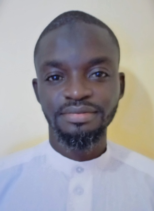

|  | Dr. Abdul-Rahim Adada MohammedEconomist | Python Developer (soon) | Full Stack Web Developer (soon)| Data Scientist PhD, Economics Associate Director, Center for Professional Development, Lakeside University College, Ghana International Relations Officer, Lakeside University College, Ghana Lecturer (Part-time), Wisconsin International University College, Ghana |
I am an economist who specializes in Islamic Economic Thought. I have written a number of academic papers on the subject, the most popular of them yet being Economics in an Islamic Society: A Theoretical Exposition and Islam's Market Ideology: A Brief Outline
I am currently learning Python programming (already at a somewhat intermediate level) and will soon start publishing my Python projects. I am also learning web development, with the view to becoming a full stack developer, and this personal site is a product of that learning process. I also have a blog for my technical writings, which I do as a hobby. I am currently a Senior Data Scientist at a top international company.
Beyond my professional projects, I hope to publish a lot of books (academic and non-academic) on faith, personal development, and the attainment financial freedom, as well as fiction novels
| Dates | Positions | Places of Work |
|---|---|---|
| 2022 - Present | Associate Director, Center for Professional Development (CfPD) | Lakeside University College, Ghana (LUCG) |
| 2022 - Present | International Relations Officer | Lakeside University College, Ghana |
| 2021 - Present | Lecturer (Part-time) | Wisconsin International University College, Ghana |
| 2020 - 2021 | Virtual Intern | SeekersGuidance Islamic Global Seminary |
| 2020 | Virtual Intern | Alhuda CIFE |
| 2011 - 2012 | Graduate Teaching Assistant | University of Ghana |
| 2011 - 2012 | Academic Tutor | Distance Education, University of Ghana |
| 2008 - 2009 | Teaching Assistant (National Service) | University of Ghana |
|
|
|---|